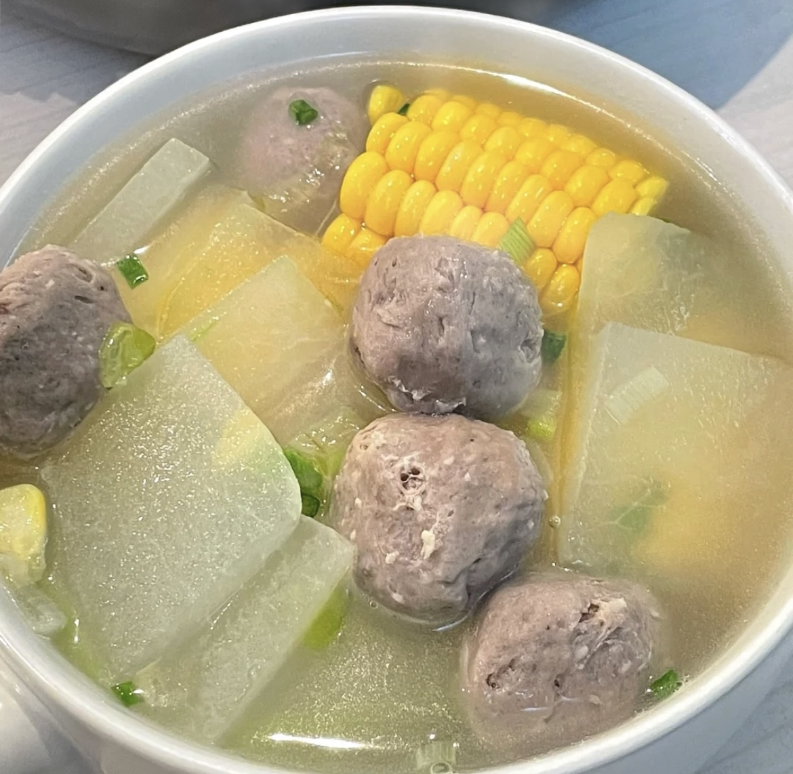
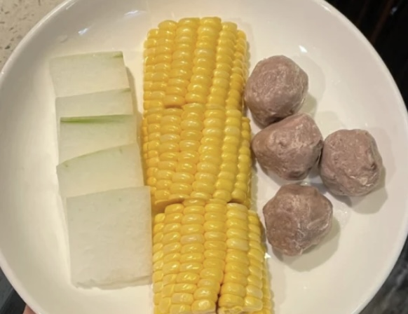
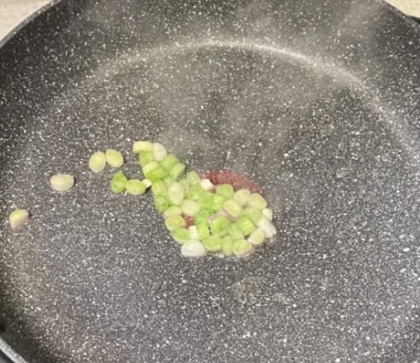
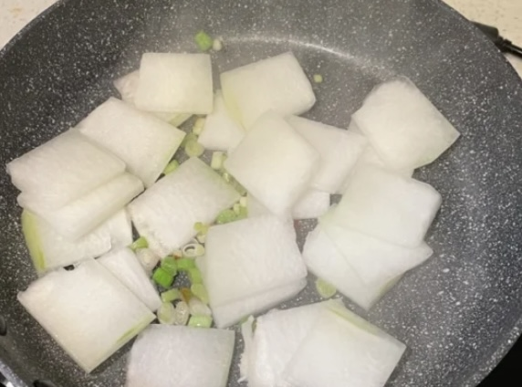
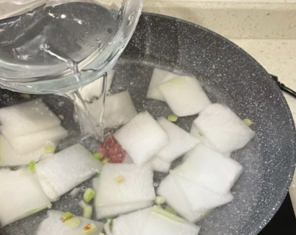
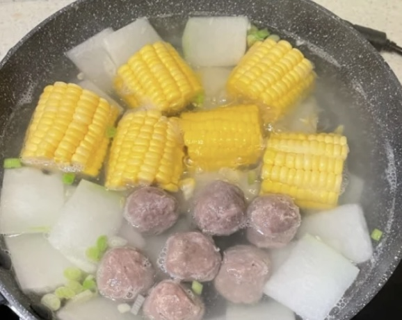
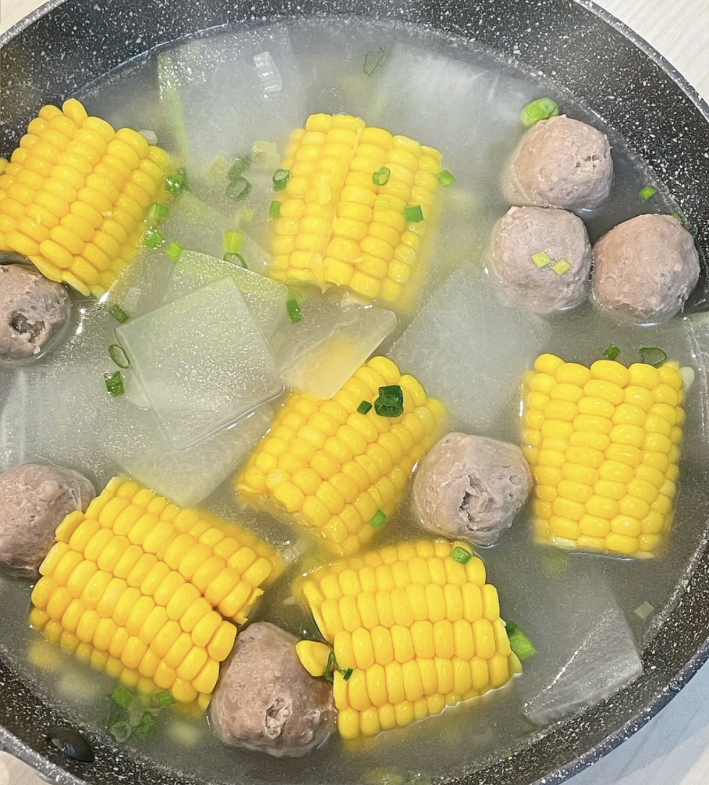

Wax gourd & Corn & Beef Ball SOUP

- Step 1: Prepare and clean foods: Wax gourd, Corn, Beef Ball, and Green Onion

- Step 2: Put a few oil, and add Green Onion, fry them

- Step 3: Add Wax gourd, continue frd them

- Step 4: Add two bowl of water

- Step 5: After boiling, add Corn and Beef ball, and add a few salt

FINISHED PRODUCT!!
